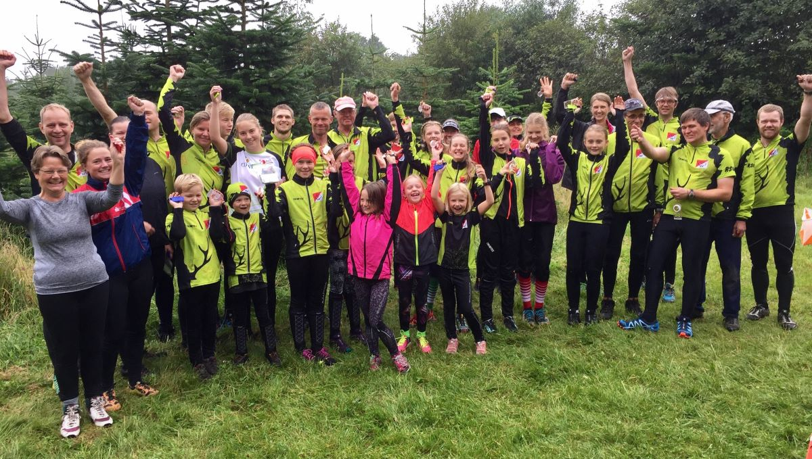

Det er for alle - Også
for dig og jer!
Orienteringsløb er for alle, der har lyst til at færdes i skov og
i terræn og finde vej ved hjælp af kort og kompas.
Men orienteringsløb finder også sted i parker og i byer, fordi man
kan navigere og finde poster overalt, blot der er lavet et kort
over området.
Banerne findes nemlig i aldersintervallet drenge/piger indtil
til 10 år og helt op til herre/damer +90 år. Afpasset efter
alder, køn og sværhedsgrad, så alle kan være med, uanset hvilket
niveau man er på, eller hvor dygtig eller erfaren man er med
kortet i hånden.
Ofte forkorter vi klubbens navn til Rold Skov OK eller blot
RSOK. Det samme gælder orienteringsløb, som vi ofte kalder
o-løb. Klubben tæller knapt 200 medlemmer, der dyrker
orienteringsløb på forskellige niveauer - lige fra elite til
motion for alle aldre. Sidstnævnte i nøjagtigt det tempo du har
lyst til, hvad enten det er i fuldt firspring eller i gang.
Banerne findes nemlig i aldersintervallet drenge/piger indtil
til 10 år og helt op til herre/damer +90 år. Afpasset efter
alder, køn og sværhedsgrad, så alle kan være med, uanset hvilket
niveau man er på, eller hvor dygtig eller erfaren man er med
kortet i hånden.
Ofte forkorter vi klubbens navn til Rold Skov OK eller blot
RSOK. Det samme gælder orienteringsløb, som vi ofte kalder
o-løb. Klubben tæller knapt 200 medlemmer, der dyrker
orienteringsløb på forskellige niveauer - lige fra elite til
motion for alle aldre. Sidstnævnte i nøjagtigt det tempo du har
lyst til, hvad enten det er i fuldt firspring eller i gang.